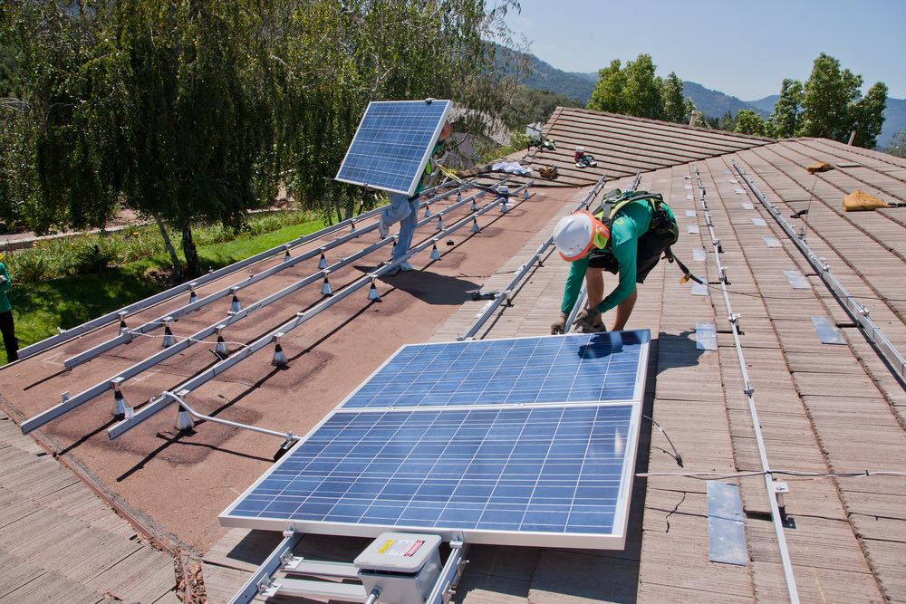
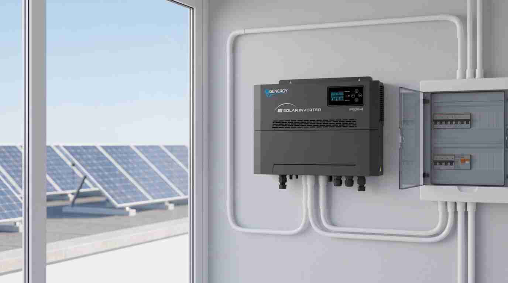
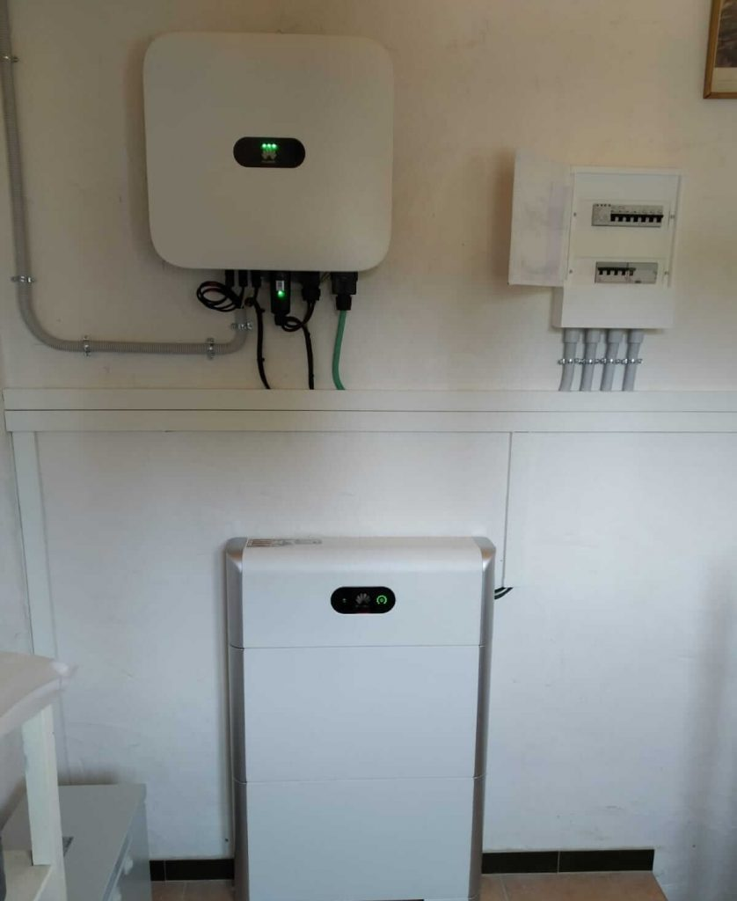
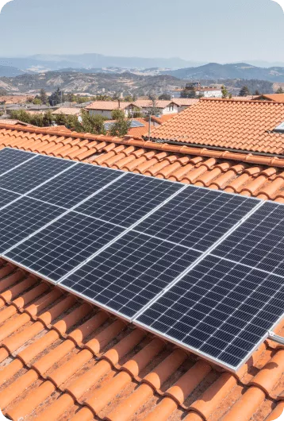

Paso 1 de 4
Montaje de los paneles
Lo primero es fijar en el tejado una estructura de raíles de aluminio. Se ancla a las vigas del tejado con unos soportes que pasan por debajo de las tejas, para no crear goteras. Sobre esos raíles se atornillan los paneles, uno al lado del otro.
Los paneles se orientan preferiblemente hacia el sur y con algo de inclinación, para recibir el máximo de sol durante el día. Después se conectan entre sí con cables especiales para exterior, formando lo que se llama una cadena o string.
- ¿Qué hacen los paneles? Convierten la luz del sol en electricidad continua (CC).
- Seguridad Los instaladores trabajan con arnés y casco: es trabajo en altura.
- Duración En una vivienda normal, el montaje suele llevar 1 o 2 días.

Paso 2 de 4
El conversor (inversor)
La electricidad que sale de los paneles es corriente continua (CC), pero los enchufes y aparatos de casa funcionan con corriente alterna (CA). El encargado de transformarla es el inversor, también llamado conversor.
Se cuelga en una pared interior o en un lugar resguardado, cerca del cuadro eléctrico. A él llegan los cables del tejado y de él sale la línea que alimenta la casa. Su pantalla muestra en todo momento cuánta energía se está produciendo.
- Entra Corriente continua desde los paneles.
- Sale Corriente alterna a 230 V, la misma que la de la red.
- Extra Muchos inversores se controlan desde una app en el móvil.

Paso 3 de 4
La batería
Los paneles producen durante el día, pero en casa también se gasta energía por la noche. La batería guarda la electricidad que sobra cuando hace sol para usarla después.
Se coloca junto al inversor, normalmente en el suelo o en la pared de un garaje o trastero, y se conecta a él. El inversor decide solo qué hacer con la energía en cada momento:
- Primero, alimenta la casa.
- Si sobra, carga la batería.
- Si la batería está llena, el excedente se vierte a la red (y la compañía lo descuenta de la factura).
- Opcional La instalación funciona sin batería, pero con ella se aprovecha mucha más energía propia.
- Ampliable Muchas baterías son modulares: se pueden añadir bloques más adelante.

Paso 4 de 4
Instalación terminada
Con todo conectado, la casa ya funciona con energía del sol. El recorrido de la electricidad queda así:
Cuando no hay sol y la batería se ha agotado, la casa toma la electricidad de la red como siempre, sin cortes y sin que tengas que hacer nada.
- Mantenimiento Mínimo: limpiar los paneles de vez en cuando y revisar la app.
- Vida útil Los paneles suelen durar más de 25 años.
- Ahorro Depende del consumo y del sol, pero la factura de la luz baja de forma notable.